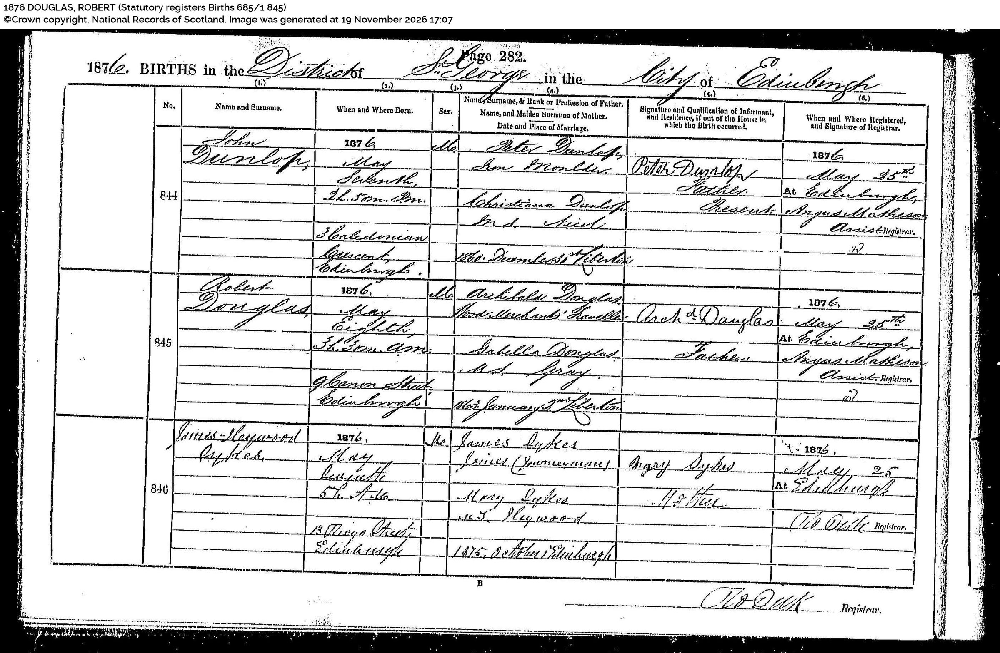

Birth of Robert Douglas, Edinburgh, 1876
Statutory register of births, District of St George, City of Edinburgh, 1876, page 282, entry 845 (685/1 845). National Records of Scotland.

The entry is boxed in red and the names are highlighted. See the full page.
What it says
- Name: Robert Douglas, male.
- Born: May 8, 1876, 3:15 a.m., 9 Canon Street, Edinburgh.
- Father: Archibald Douglas, wood merchant's traveller.
- Mother: Isabella Douglas, maiden surname Gray. Parents married January 2, 1863, Liberton.
- Informant: Archibald Douglas, father. Registered at Edinburgh, May 25, 1876.
Why it matters
Robert Douglas is the man who raised Laurence and gave him the name Douglas. This entry shows he was born in Edinburgh to an Edinburgh family; the "Liberton" of his parents' marriage is the parish near Edinburgh, not Libberton in Lanarkshire.
Crown copyright, National Records of Scotland. Image from ScotlandsPeople.